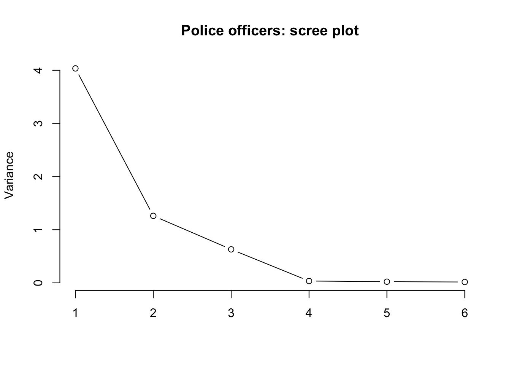
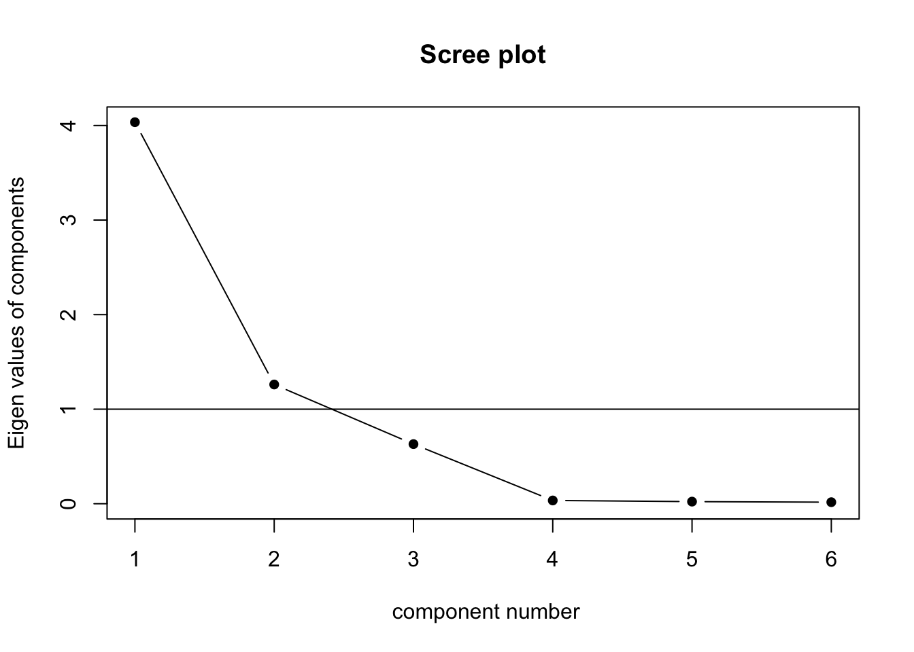
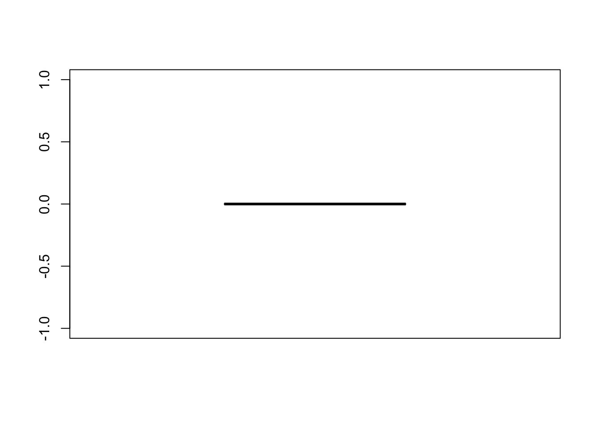
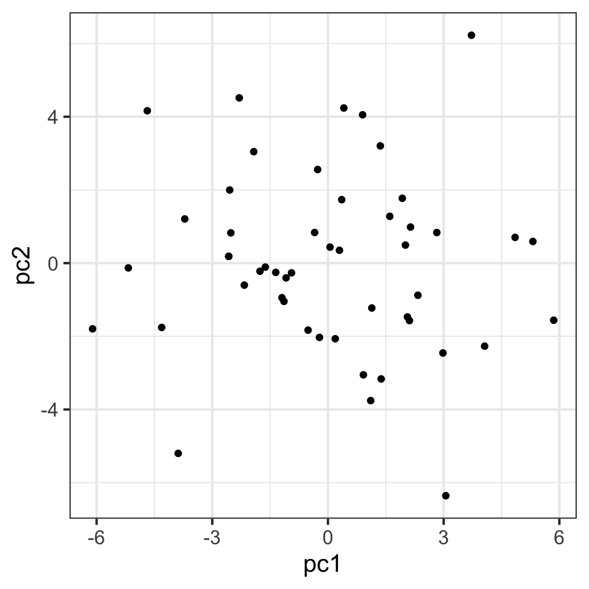

library(tidyverse)
job <- read_csv('https://uoepsy.github.io/data/police_performance.csv')
dim(job)[1] 50 7Relevant packages
The goal of principal component analysis (PCA) is to find a smaller number of uncorrelated variables which are linear combinations of the original ( many ) variables and explain most of the variation in the data.
Take a moment to think about the various constructs that you are often interested in as a researcher. This might be anything from personality traits, to language proficiency, social identity, anxiety etc. How we measure such constructs is a very important consideration for research. The things we’re interested in are very rarely the things we are directly measuring.
Consider how we might assess levels of anxiety or depression. Can we ever directly measure anxiety? 1. More often than not, we measure these things using questionnaire based methods, to capture the multiple dimensions of the thing we are trying to assess. Twenty questions all measuring different aspects of anxiety are (we hope) going to correlate with one another if they are capturing some commonality (the construct of “anxiety”). But they introduce a problem for us, which is how to deal with 20 variables that represent (in broad terms) the same thing. How can we assess “effects on anxiety”, rather than “effects on anxiety q1 + effects on anxiety q2 + …”, etc.
This leads us to the idea of reducing the dimensionality of our data. Can we capture a reasonable amount of the information from our 20 questions in a smaller number of variables?
Data: police_performance.csv
The file police_performance.csv (available at https://uoepsy.github.io/data/police_performance.csv) contains data on fifty police officers who were rated in six different categories as part of an HR procedure. The rated skills were:
communprobl_solvlogicallearnphysicalappearanceThe data also contains information on each police officer’s arrest rate (proportion of arrests that lead to criminal charges).
We are interested in if the skills ratings by HR are a good set of predictors of police officer success (as indicated by their arrest rate).
First things first, we should always plot and describe our data. This is always a sensible thing to do - while many of the datasets we give you are nice and clean and organised, the data you get out of questionnaire tools, experiment software etc, are almost always quite a bit messier. It is also very useful to just eyeball the patterns of relationships between variables.
Load the job performance data into R and call it job. Check whether or not the data were read correctly into R - do the dimensions correspond to the description of the data above?
Provide descriptive statistics for each variable in the dataset.
There are many reasons we might want to reduce the dimensionality of data:
PCA is most often used for the latter - we are less interested in the theory behind our items, we just want a useful way of simplifying lots of variables down to a smaller number.
Recall that we are wanting to see how well the skills ratings predict arrest rate.
We might fit this model:
mod <- lm(arrest_rate ~ commun + probl_solv + logical + learn + physical + appearance, data = job)However, we might have reason to think that many of these predictors might be quite highly correlated with one another, and so we may be unable to draw accurate inferences. This is borne out in our variance inflation factor (VIF):
library(car)
vif(mod) commun probl_solv logical learn physical appearance
34.67 1.17 1.23 43.56 34.98 21.78 As the original variables are highly correlated, it is possible to reduce the dimensionality of the problem under investigation without losing too much information.
On the other side, if the correlation between the variables under study are weak, a larger number of components is needed in order to explain sufficient variability.
Working with only the skills ratings (not the arrest rate - we’ll come back to that right at the end), investigate whether or not the variables are highly correlated and explain whether or not you PCA might be useful in this case.
Hint: We only have 6 variables here, but if we had many, how might you visualise cor(job)?
This depends on the variances of the variables in the dataset. If the variables have large differences in their variances, then the variables with the largest variances will tend to dominate the first few principal components.
A solution to this is to standardise the variables prior to computing the covariance matrix - i.e., compute the correlation matrix!
# show that the correlation matrix and the covariance matrix of the standardized variables are identical
all.equal(cor(job_skills), cov(scale(job_skills)))[1] TRUELook at the variance of the skills ratings in the data set. Do you think that PCA should be carried on the covariance matrix or the correlation matrix?
Using the principal() function from the psych package, we can perform a PCA of the job performance data, Call the output job_pca.
job_pca <- principal(job_skills, nfactors = ncol(job_skills), covar = ..., rotate = 'none')Depending on your answer to the previous question, either set covar = TRUE or covar = FALSE within the principal() function.
Warning: the output of the function will be in terms of standardized variables nevertheless. So you will see output with standard deviation of 1.
We can print the output by just typing the name of our PCA:
job_pcaPrincipal Components Analysis
Call: principal(r = job_skills, nfactors = 2, rotate = "none", covar = TRUE)
Standardized loadings (pattern matrix) based upon correlation matrix
PC1 PC2 h2 u2 com
commun 0.98 -0.12 0.98 0.017 1.0
probl_solv 0.22 0.81 0.71 0.295 1.2
logical 0.33 0.75 0.67 0.335 1.4
learn 0.99 -0.11 0.99 0.014 1.0
physical 0.99 -0.08 0.98 0.017 1.0
appearance 0.98 -0.13 0.97 0.026 1.0
PC1 PC2
SS loadings 4.04 1.26
Proportion Var 0.67 0.21
Cumulative Var 0.67 0.88
Proportion Explained 0.76 0.24
Cumulative Proportion 0.76 1.00
Mean item complexity = 1.1
Test of the hypothesis that 2 components are sufficient.
The root mean square of the residuals (RMSR) is 0.08
with the empirical chi square 9.97 with prob < 0.041
Fit based upon off diagonal values = 0.98The output is made up of two parts.
First, it shows the loading matrix. In each column of the loading matrix we find how much each of the measured variables contributes to the computed new axis/direction (that is, the principal component). Notice that there are as many principal components as variables.
The second part of the output displays the contribution of each component to the total variance:
Let’s focus on the row of that output called “Cumulative Var”. This displays the cumulative sum of the variances of each principal component. Taken all together, the six principal components taken explain all of the total variance in the original data. In other words, the total variance of the principal components (the sum of their variances) is equal to the total variance in the original data (the sum of the variances of the variables).
However, our goal is to reduce the dimensionality of our data, so it comes natural to wonder which of the six principal components explain most of the variability, and which components instead do not contribute substantially to the total variance.
To that end, the second row “Proportion Var” displays the proportion of the total variance explained by each component, i.e. the variance of the principal component divided by the total variance.
The last row, as we saw, is the cumulative proportion of explained variance: 0.67, 0.67 + 0.21, 0.67 + 0.21 + 0.11, and so on.
We also notice that the first PC alone explains 67.3% of the total variability, while the first two components together explain almost 90% of the total variability. From the third component onwards, we do not see such a sharp increase in the proportion of explained variance, and the cumulative proportion slowly reaches the total ratio of 1 (or 100%).
Doing data reduction can feel a bit like magic, and in part that’s just because it’s quite complicated.
The intuition
Consider one way we might construct a correlation matrix - as the product of vector \(\mathbf{f}\) with \(\mathbf{f'}\) (f transposed): \[ \begin{equation*} \mathbf{f} = \begin{bmatrix} 0.9 \\ 0.8 \\ 0.7 \\ 0.6 \\ 0.5 \\ 0.4 \\ \end{bmatrix} \qquad \mathbf{f} \mathbf{f'} = \begin{bmatrix} 0.9 \\ 0.8 \\ 0.7 \\ 0.6 \\ 0.5 \\ 0.4 \\ \end{bmatrix} \begin{bmatrix} 0.9, 0.8, 0.7, 0.6, 0.5, 0.4 \\ \end{bmatrix} \qquad = \qquad \begin{bmatrix} 0.81, 0.72, 0.63, 0.54, 0.45, 0.36 \\ 0.72, 0.64, 0.56, 0.48, 0.40, 0.32 \\ 0.63, 0.56, 0.49, 0.42, 0.35, 0.28 \\ 0.54, 0.48, 0.42, 0.36, 0.30, 0.24 \\ 0.45, 0.40, 0.35, 0.30, 0.25, 0.20 \\ 0.36, 0.32, 0.28, 0.24, 0.20, 0.16 \\ \end{bmatrix} \end{equation*} \]
But we constrain this such that the diagonal has values of 1 (the correlation of a variable with itself is 1), and lets call it R. \[ \begin{equation*} \mathbf{R} = \begin{bmatrix} 1.00, 0.72, 0.63, 0.54, 0.45, 0.36 \\ 0.72, 1.00, 0.56, 0.48, 0.40, 0.32 \\ 0.63, 0.56, 1.00, 0.42, 0.35, 0.28 \\ 0.54, 0.48, 0.42, 1.00, 0.30, 0.24 \\ 0.45, 0.40, 0.35, 0.30, 1.00, 0.20 \\ 0.36, 0.32, 0.28, 0.24, 0.20, 1.00 \\ \end{bmatrix} \end{equation*} \]
PCA is about trying to determine a vector f which generates the correlation matrix R. a bit like unscrambling eggs!
in PCA, we express \(\mathbf{R = CC'}\), where \(\mathbf{C}\) are our principal components.
If \(n\) is number of variables in \(R\), then \(i^{th}\) component \(C_i\) is the linear sum of each variable multiplied by some weighting:
\[
C_i = \sum_{j=1}^{n}w_{ij}x_{j}
\]
How do we find \(C\)?
This is where “eigen decomposition” comes in.
For the \(n \times n\) correlation matrix \(\mathbf{R}\), there is an eigenvector \(x_i\) that solves the equation \[
\mathbf{x_i R} = \lambda_i \mathbf{x_i}
\] Where the vector multiplied by the correlation matrix is equal to some eigenvalue \(\lambda_i\) multiplied by that vector.
We can write this without subscript \(i\) as: \[
\begin{align}
& \mathbf{R X} = \mathbf{X \lambda} \\
& \text{where:} \\
& \mathbf{R} = \text{correlation matrix} \\
& \mathbf{X} = \text{matrix of eigenvectors} \\
& \mathbf{\lambda} = \text{vector of eigenvalues}
\end{align}
\] the vectors which make up \(\mathbf{X}\) must be orthogonal (\(\mathbf{XX' = I}\)), which means that \(\mathbf{R = X \lambda X'}\)
We can actually do this in R manually. Creating a correlation matrix
# lets create a correlation matrix, as the produce of ff'
f <- seq(.9,.4,-.1)
R <- f %*% t(f)
#give rownames and colnames
rownames(R)<-colnames(R)<-paste0("V",seq(1:6))
#constrain diagonals to equal 1
diag(R)<-1
R V1 V2 V3 V4 V5 V6
V1 1.00 0.72 0.63 0.54 0.45 0.36
V2 0.72 1.00 0.56 0.48 0.40 0.32
V3 0.63 0.56 1.00 0.42 0.35 0.28
V4 0.54 0.48 0.42 1.00 0.30 0.24
V5 0.45 0.40 0.35 0.30 1.00 0.20
V6 0.36 0.32 0.28 0.24 0.20 1.00Eigen Decomposition
# do eigen decomposition
e <- eigen(R)
print(e, digits=2)eigen() decomposition
$values
[1] 3.16 0.82 0.72 0.59 0.44 0.26
$vectors
[,1] [,2] [,3] [,4] [,5] [,6]
[1,] -0.50 -0.061 0.092 0.14 0.238 0.816
[2,] -0.47 -0.074 0.121 0.21 0.657 -0.533
[3,] -0.43 -0.096 0.182 0.53 -0.675 -0.184
[4,] -0.39 -0.142 0.414 -0.78 -0.201 -0.104
[5,] -0.34 -0.299 -0.860 -0.20 -0.108 -0.067
[6,] -0.28 0.934 -0.178 -0.10 -0.067 -0.045The eigenvectors are orthogonal (\(\mathbf{XX' = I}\)):
round(e$vectors %*% t(e$vectors),2) [,1] [,2] [,3] [,4] [,5] [,6]
[1,] 1 0 0 0 0 0
[2,] 0 1 0 0 0 0
[3,] 0 0 1 0 0 0
[4,] 0 0 0 1 0 0
[5,] 0 0 0 0 1 0
[6,] 0 0 0 0 0 1The Principal Components \(\mathbf{C}\) are the eigenvectors scaled by the square root of the eigenvalues:
#eigenvectors
e$vectors [,1] [,2] [,3] [,4] [,5] [,6]
[1,] -0.496 -0.0611 0.0923 0.139 0.2385 0.8155
[2,] -0.468 -0.0743 0.1210 0.214 0.6566 -0.5327
[3,] -0.433 -0.0963 0.1820 0.530 -0.6751 -0.1842
[4,] -0.390 -0.1416 0.4143 -0.778 -0.2006 -0.1036
[5,] -0.340 -0.2992 -0.8604 -0.197 -0.1076 -0.0669
[6,] -0.282 0.9338 -0.1784 -0.100 -0.0667 -0.0452#scaled by sqrt of eigenvalues
diag(sqrt(e$values)) [,1] [,2] [,3] [,4] [,5] [,6]
[1,] 1.78 0.000 0.000 0.000 0.000 0.000
[2,] 0.00 0.906 0.000 0.000 0.000 0.000
[3,] 0.00 0.000 0.848 0.000 0.000 0.000
[4,] 0.00 0.000 0.000 0.769 0.000 0.000
[5,] 0.00 0.000 0.000 0.000 0.664 0.000
[6,] 0.00 0.000 0.000 0.000 0.000 0.512C <- e$vectors %*% diag(sqrt(e$values))
C [,1] [,2] [,3] [,4] [,5] [,6]
[1,] -0.883 -0.0554 0.0782 0.1070 0.1584 0.4174
[2,] -0.833 -0.0673 0.1025 0.1648 0.4361 -0.2727
[3,] -0.770 -0.0873 0.1542 0.4077 -0.4483 -0.0943
[4,] -0.694 -0.1284 0.3512 -0.5987 -0.1332 -0.0530
[5,] -0.604 -0.2712 -0.7293 -0.1514 -0.0715 -0.0342
[6,] -0.502 0.8464 -0.1513 -0.0771 -0.0443 -0.0231And we can reproduce our correlation matrix, because \(\mathbf{R = CC'}\).
C %*% t(C) [,1] [,2] [,3] [,4] [,5] [,6]
[1,] 1.00 0.72 0.63 0.54 0.45 0.36
[2,] 0.72 1.00 0.56 0.48 0.40 0.32
[3,] 0.63 0.56 1.00 0.42 0.35 0.28
[4,] 0.54 0.48 0.42 1.00 0.30 0.24
[5,] 0.45 0.40 0.35 0.30 1.00 0.20
[6,] 0.36 0.32 0.28 0.24 0.20 1.00Now lets imagine we only consider 1 principal component.
We can do this with the principal() function:
library(psych)
pc1<-principal(R, nfactors = 1, covar = FALSE, rotate = 'none')
pc1Principal Components Analysis
Call: principal(r = R, nfactors = 1, rotate = "none", covar = FALSE)
Standardized loadings (pattern matrix) based upon correlation matrix
PC1 h2 u2 com
V1 0.88 0.78 0.22 1
V2 0.83 0.69 0.31 1
V3 0.77 0.59 0.41 1
V4 0.69 0.48 0.52 1
V5 0.60 0.37 0.63 1
V6 0.50 0.25 0.75 1
PC1
SS loadings 3.16
Proportion Var 0.53
Mean item complexity = 1
Test of the hypothesis that 1 component is sufficient.
The root mean square of the residuals (RMSR) is 0.09
Fit based upon off diagonal values = 0.95Look familiar? It looks like the first component we computed manually. The first column of \(\mathbf{C}\):
cbind(pc1$loadings, C=C[,1]) PC1 C
V1 0.883 -0.883
V2 0.833 -0.833
V3 0.770 -0.770
V4 0.694 -0.694
V5 0.604 -0.604
V6 0.502 -0.502We can now ask “how well does this component (on its own) recreate our correlation matrix?”
C[,1] %*% t(C[,1]) [,1] [,2] [,3] [,4] [,5] [,6]
[1,] 0.780 0.735 0.680 0.613 0.534 0.444
[2,] 0.735 0.693 0.641 0.578 0.503 0.418
[3,] 0.680 0.641 0.592 0.534 0.465 0.387
[4,] 0.613 0.578 0.534 0.481 0.419 0.348
[5,] 0.534 0.503 0.465 0.419 0.365 0.304
[6,] 0.444 0.418 0.387 0.348 0.304 0.252It looks close, but not quite. How much not quite? Measurably so!
R - (C[,1] %*% t(C[,1])) V1 V2 V3 V4 V5 V6
V1 0.2200 -0.0154 -0.0498 -0.0727 -0.0838 -0.0836
V2 -0.0154 0.3067 -0.0809 -0.0976 -0.1033 -0.0982
V3 -0.0498 -0.0809 0.4075 -0.1140 -0.1153 -0.1066
V4 -0.0727 -0.0976 -0.1140 0.5187 -0.1193 -0.1085
V5 -0.0838 -0.1033 -0.1153 -0.1193 0.6346 -0.1036
V6 -0.0836 -0.0982 -0.1066 -0.1085 -0.1036 0.7477Notice the values on the diagonals of \(\mathbf{c_1}\mathbf{c_1}'\).
diag(C[,1] %*% t(C[,1]))[1] 0.780 0.693 0.592 0.481 0.365 0.252These aren’t 1, like they are in \(R\). But they are proportional: this is the amount of variance in each observed variable that is explained by this first component. Sound familiar?
pc1$communality V1 V2 V3 V4 V5 V6
0.780 0.693 0.592 0.481 0.365 0.252 And likewise the 1 minus these is the unexplained variance:
1 - diag(C[,1] %*% t(C[,1]))[1] 0.220 0.307 0.408 0.519 0.635 0.748pc1$uniquenesses V1 V2 V3 V4 V5 V6
0.220 0.307 0.408 0.519 0.635 0.748 There is no single best method to select the optimal number of components to keep, while discarding the remaining ones (which are then considered as noise components).
The following three heuristic rules are commonly used in the literature:
In the next sections we will look at each of them in turn.
The rule suggests to keep as many principal components as needed in order to explain approximately 80-90% of the total variance.
Looking again at the PCA output, how many principal components would you keep if you were following the cumulative proportion of explained variance criterion?
According to Kaiser’s rule, we should keep the principal components having variance larger than 1. Standardized variables have a variance equal 1. Because we have 6 variables in the data set, and the total variance is 6, the value 1 represents the average variance in the data: \[ \frac{1 + 1 + 1 + 1 + 1 + 1}{6} = 1 \]
Hint:
The variances of each PC are shown in the row of the output named SS loadings and also in job_pca$values. The average variance is:
mean(job_pca$values)[1] 1Looking again at the PCA output, how many principal components would you keep if you were following Kaiser’s criterion?
The scree plot is a graphical criterion which involves plotting the variance for each principal component. This can be easily done by calling plot on the variances, which are stored in job_pca$values
plot(x = 1:length(job_pca$values), y = job_pca$values,
type = 'b', xlab = '', ylab = 'Variance',
main = 'Police officers: scree plot', frame.plot = FALSE)
where the argument type = 'b' tells R that the plot should have both points and lines.
A typical scree plot features higher variances for the initial components and quickly drops to small variances where the curve is almost flat. The flat part of the curve represents the noise components, which are not able to capture the main sources of variability in the system.
According to the scree plot criterion, we should keep as many principal components as where the “elbow” in the plot occurs. By elbow we mean the variance before the curve looks almost flat.
Alternatively, some people prefer to use the function scree() from the psych package:
scree(job_skills, factors = FALSE)
This also draws a horizontal line at y = 1. So, if you are making a decision about how many PCs to keep by looking at where the plot falls below the y = 1 line, you are basically following Kaiser’s rule. In fact, Kaiser’s criterion tells you to keep as many PCs as are those with a variance (= eigenvalue) greater than 1.
NOTE: Scree plots are subjective and may have multiple or no obvious kinks/elbows, making them hard to interpret
According to the scree plot, how many principal components would you retain?
The Minimum Average Partial (MAP) test computes the partial correlation matrix (removing and adjusting for a component from the correlation matrix), sequentially partialling out each component. At each step, the partial correlations are squared and their average is computed.
At first, the components which are removed will be those that are most representative of the shared variance between 2+ variables, meaning that the “average squared partial correlation” will decrease. At some point in the process, the components being removed will begin represent variance that is specific to individual variables, meaning that the average squared partial correlation will increase.
The MAP method is to keep the number of components for which the average squared partial correlation is at the minimum.
We can conduct MAP in R using:
VSS(data, plot = FALSE, method="pc", n = ncol(data))(be aware there is a lot of other information in this output too! For now just focus on the map column)
NOTE: The MAP method will sometimes tend to under-extract (suggest too few components)
How many components should we keep according to the MAP method?
Parallel analysis involves simulating lots of datasets of the same dimension but in which the variables are uncorrelated. For each of these simulations, a PCA is conducted on its correlation matrix, and the eigenvalues are extracted. We can then compare our eigenvalues from the PCA on our actual data to the average eigenvalues across these simulations. In theory, for uncorrelated variables, no components should explain more variance than any others, and eigenvalues should be equal to 1. In reality, variables are rarely truly uncorrelated, and so there will be slight variation in the magnitude of eigenvalues simply due to chance. The parallel analysis method suggests keeping those components for which the eigenvalues are greater than those from the simulations.
It can be conducted in R using:
fa.parallel(job_skills, fa="pc", n.iter = 500)NOTE: Parallel analysis will sometimes tend to over-extract (suggest too many components)
How many components should we keep according to parallel analysis?
Based on the set of criteria above, make a decision on how many components you will keep.
Sometimes, there may also be pragmatic reasons for keeping a certain number (e.g. if you want specifically 1 dimension, you may be willing to accept a lower proportion of explained variance).
Let’s have a look at the selected principal components:
job_pca$loadings[, 1:2] PC1 PC2
commun 0.984 -0.1197
probl_solv 0.223 0.8095
logical 0.329 0.7466
learn 0.987 -0.1097
physical 0.988 -0.0784
appearance 0.979 -0.1253and at their corresponding proportion of total variance explained:
job_pca$values / sum(job_pca$values)[1] 0.67253 0.21016 0.10510 0.00577 0.00372 0.00273We see that the first PC accounts for 67.3% of the total variability. All loadings seem to have the same magnitude apart from probl_solv and logical which are closer to zero. The first component looks like a sort of average of the officers performance scores excluding problem solving and logical ability.
The second principal component, which explains only 21% of the total variance, has two loadings clearly distant from zero: the ones associated to problem solving and logical ability. It distinguishes police officers with strong logical and problem solving skills and low scores on other skills (note the negative magnitudes).
We have just seen how to interpret the first components by looking at the magnitude and sign of the coefficients for each measured variable.
For interpretation purposes, it might help hiding very small loadings. This can be done by specifying the cutoff value in the print() function. However, this only works when you pass the loadings for all the PCs:
print(job_pca$loadings, cutoff = 0.3)
Loadings:
PC1 PC2
commun 0.984
probl_solv 0.810
logical 0.329 0.747
learn 0.987
physical 0.988
appearance 0.979
PC1 PC2
SS loadings 4.035 1.261
Proportion Var 0.673 0.210
Cumulative Var 0.673 0.883We now focus our attention on the following question: Are all the statistical units (police officers) well represented in the 2D plot?
The 2D representation of the original data, which comprise 6 measured variables, is an approximation and henceforth it may happen that not all units are well represented in this new space.
Typically, it is good to assess the approximation for each statistical unit by inspecting the scores on the discarded principal components. If a unit has a high score on those components, then this is a sign that the unit might be highly misplaced in the new space and misrepresented.
Consider the 3D example below. There are three cases (= units or individuals). In the original space they are all very different from each other. For example, cases 1 and 2 are very different in their x and y values, but very similar in their z value. Cases 2 and 3 are very similar in their x and y values but very different in their z value. Cases 1 and 3 have very different values for all three variables x, y, and z.
However, when represented in the 2D space given by the two principal components, units 2 and 3 seems like they are very similar when, in fact, they were very different in the original space which also accounted for the z variable.

We typically measure how badly a unit is represented in the new coordinate system by considering the sum of squared scores on the discarded principal components:
scores_discarded <- job_pca$scores[, -(1:2)]
sum_sq <- rowSums(scores_discarded^2)
sum_sq [1] 0 0 0 0 0 0 0 0 0 0 0 0 0 0 0 0 0 0 0 0 0 0 0 0 0 0 0 0 0 0 0 0 0 0 0 0 0 0
[39] 0 0 0 0 0 0 0 0 0 0 0 0Units with a high score should be considered for further inspection as it may happen that they are represented as close to another unit when, in fact, they might be very different.
boxplot(sum_sq)
There seem to be only five outliers, and they are not too high compared to the rest of the scores. For this reason, we will consider the 2D representation of the data to be satisfactory.
Now that we have decided to reduce our six variables down to two principal components, we can, for each of our observations, get their scores on each of our components.
job_pca2 <- principal(job_skills, nfactors = 2, covar = TRUE, rotate = 'none')
head(job_pca2$scores) PC1 PC2
[1,] -6.10 -1.796
[2,] -4.69 4.164
[3,] -5.18 -0.131
[4,] -4.31 -1.758
[5,] -3.71 1.207
[6,] -3.88 -5.200PCA scores are essentially weighted combinations of an individuals responses to the items.
\[
\text{score}_{\text{component j}} = w_{1j}x_1 + w_{2j}x_2 + w_{3j}x_3 +\, ... \, + w_{pj}x_p
\] Where \(w\) are the weights, \(x\) the variable scores.
The weights are calculated from the eigenvectors as \[ w_{ij} = \frac{a_{ij}}{\sqrt(\lambda_j)} \] where \(w_{ij}\) is the weight for a given variable \(i\) on component \(j\) , \(a_{ij}\) is the value from the eigenvector for item \(i\) on component \(j\) and \(\lambda_{j}\) is the eigenvalue for that component.
In the literature, some authors also suggest to look at the correlation between the principal component scores and the measured variables:
# First PC
cor(job_pca2$scores[,1], job_skills) commun probl_solv logical learn physical appearance
[1,] 0.985 0.214 0.319 0.988 0.989 0.981The first PC is strongly correlated with all the measured variables except probl_solv and logical. As mentioned when looking at loadings, all these variables seem to contributed to the first PC.
# Second PC
cor(job_pca2$scores[,2], job_skills) commun probl_solv logical learn physical appearance
[1,] -0.163 0.792 0.738 -0.154 -0.122 -0.169The second PC is strongly correlated with probl_solv and logical, and slightly negatively correlated with the remaining variables. This separates police officers with clear logical and problem solving skills and a low rating on other skills.
We can also visualise our observations (the police officers) in the reduced space given by the retained principal component scores.
tibble(pc1 = job_pca2$scores[, 1],
pc2 = job_pca2$scores[, 2]) %>%
ggplot(.,aes(x=pc1,y=pc2))+
geom_point()
We have reduced our six variables down to two principal components, and we are now able to use the scores on each component in a subsequent analysis!
Join the principal component scores for your retained components to the original dataset which has the arrest rates in.
Then fit a linear model to look at how the arrest rate of police officers is predicted by the two components representing different composites of the skills ratings by HR.
Check for multicollinearity between your predictors.
Even if we cut open someone’s brain, it’s unclear what we would be looking for in order to ‘measure’ it. It is unclear whether anxiety even exists as a physical thing, or rather if it is simply the overarching concept we apply to a set of behaviours and feelings↩︎
{kind=link}